从 π0 到 π0.7：Physical Intelligence 的通用机器人策略如何走向经验学习与可操控泛化
Physical Intelligence π 系列专题深度剖析 · 架构、数据、动作表示、强化学习、记忆与技术演进
核心判断：π 系列的演进并不是单纯增大 VLA，而是在持续回答同一个系统问题：如何让一个视觉—语言预训练模型既保留开放世界语义能力，又能以高频、连续、闭环的方式控制多种机器人，并利用成功、失败、纠正、记忆和用户指导继续学习。π0 建立连续动作基础模型；π0.5 将高层语义预测与异构数据共训练用于开放世界泛化；π*0.6 用 RECAP 把经验变成可监督的 advantage 条件；π0.7 则把多模态上下文变成统一的“策略方向盘”。
Physical Intelligence Research · π0 · π0.5 · π*0.6 / RECAP · π0.7
1. 谱系总览与证据链
1.1 版本号之外：四个主代际与六条支撑能力
本专题把 π0、π0.5、π*0.6、π0.7 视为四个主代际。π*0.6 的星号不是装饰，它表示以 π0.6 为底座、通过 RECAP 经验学习得到的强化版本；FAST、Knowledge Insulation、Hi Robot、Real-Time Chunking、MEM 与 Think Harder 则是支撑能力，而不是独立编号代际。这样划分后，技术路线变得清晰：主代际回答“当前通用策略具备什么整体能力”，支撑分支回答“动作怎么编码、语义知识怎么保留、长任务怎么记忆、延迟怎么处理、失败后怎么恢复”。π0.7 的真正含义，正是这些支撑能力第一次被组织成统一上下文和统一推理执行链路。
1.2 一张表读懂演进逻辑
| 阶段 | 主要痛点 | 核心机制 | 能力边界 |
|---|---|---|---|
| π0 | 离散 VLA 难以输出高频、精细、连续动作 | 预训练 VLM + 独立 action expert + conditional flow matching | 具备广泛技能与后训练能力，但高层规划和开放世界泛化有限 |
| FAST / KI / RTC | 动作 token 冗余、VLM 遗忘、动作块延迟 | DCT+BPE 动作压缩；stop-gradient 知识隔离；连续动作块拼接 | 解决组件级瓶颈，尚不是完整通才系统 |
| π0.5 | 新环境、新对象和长时程任务需要语义推断 | 异构机器人共训练、高层子任务预测、FAST 与连续动作联合监督 | 泛化增强，但仍主要从高质量示范学习 |
| π*0.6 | 示范学习不能充分利用失败、自主 rollout 和纠正 | RECAP：价值函数、advantage 条件、离线 RL 与真实经验 | 目标任务可靠性显著提高，但能力仍需面向任务收集经验 |
| π0.7 | 如何把异质、次优经验训练成可由人和模型操控的通才策略 | 多模态 prompt、MEM 历史、episode metadata、subgoal image、coaching、CFG | 未见任务仍低于分布内任务，真正“未见”也难严格界定 |

1.3 证据阅读顺序：从动作接口到经验闭环
理解这一系列最有效的顺序并非按发布日期逐页阅读，而是先看动作接口，再看泛化与经验。π0 的架构图解释连续动作如何接入 VLM；FAST 说明为什么动作离散化并不等于简单分箱；π0.5 展示高层语义子任务如何支持长任务；π*0.6 的价值函数与 advantage 条件解释失败数据为何不再只是噪声；π0.7 的架构和 prompt 图则把语言、图像子目标、历史和质量元数据放入同一控制上下文。实验部分需要始终区分三种结论：分布内熟练度、跨环境/跨机器人泛化，以及通过用户 coaching 或强化学习获得新能力。
2. π0：连续动作机器人基础模型
2.1 研究背景：VLM 会“理解”，但机器人需要 50 Hz 地“做”
π0 面向的根本冲突是：互联网预训练 VLM 擅长视觉语义和语言条件，却以离散 token 为主要接口；精细机器人操作需要多模态、连续、高频动作，并且错误会在闭环执行中累积。早期 VLA 往往对每个动作维度分箱并自回归生成，低频抓放尚可，但洗衣折叠、装箱、双臂协作等任务既要求动作轨迹平滑，又存在多个合理执行方式。π0 因而不把动作硬塞进语言词表，而是在 VLM 旁增加专门的连续动作生成器，并用约 10,000 小时、7 类机器人配置与 68 类任务建立跨具身预训练底座。
2.2 系统链路：观察、语言、状态如何变成动作块
在时刻 t，观察由多路 RGB 图像、语言指令与机器人关节状态组成：o_t=[I_t^1,...,I_t^n,ℓ,q_t]。图像编码器和线性投影把视觉 patch、语言 token 与状态嵌入送入同一 Transformer 上下文；action expert 接收这些上下文，并一次预测未来 H=50 步动作块 A_t=[a_t,...,a_{t+H-1}]。执行端只执行动作块的一部分，然后重新观察和推断，从而形成 receding-horizon 闭环。该设计同时降低推理频率与短视抖动，但动作块越长，环境突变后响应越迟，这一矛盾后来由 RTC 专门处理。

2.3 conditional flow matching：从噪声积分到可执行动作
π0 建模条件动作分布 p(A_t|o_t)。训练时采样噪声 ε~N(0,I) 与流时间 τ∈[0,1]，构造线性概率路径 A_t^τ=τA_t+(1-τ)ε；网络学习速度场 v_θ(A_t^τ,o_t)，逼近把噪声推向真实动作的方向 u(A_t^τ|A_t)=A_t-ε：
推理时从 A_t^0~N(0,I) 出发，用 Euler 积分反复更新 A_t^{τ+δ}=A_t^τ+δv_θ(A_t^τ,o_t)，最终得到连续动作块。与逐 token 自回归相比，动作块内所有位置可联合建模，适合多峰且平滑的动作分布；代价是动作概率没有方便的闭式似然，这也使 PPO 一类依赖 log-probability 的强化学习方法更难直接套用，后来 RECAP 选择 advantage conditioning 正是为了绕开这一障碍。
2.4 贡献与边界：基础模型成立，不等于自主规划成立
π0 的主要突破是把互联网尺度 VLM 语义先验与高频连续控制放进同一可扩展架构，并证明统一底座既能直接执行预训练任务，也能通过少量或大量后训练学习困难任务。其展示的洗衣折叠、桌面收拾和装箱往往持续数分钟，明显超出单步抓放。然而 π0 的语言指令仍偏简单，高层任务分解常依赖外部策略；模型不会仅凭“整理房间”可靠生成完整计划。数据覆盖、安全性、精密接触与分布外恢复也没有被充分解决。π0 因此应被理解为可靠的连续控制基础层，而非已经完成认知规划的通用机器人。

3. FAST：让连续动作能够被语言模型高效建模
3.1 为什么逐时刻动作分箱在高频控制上失效
FAST 研究的不是“连续动作与离散动作谁更先进”，而是高频轨迹如何形成有信息量的 token。若把 50 Hz、14 维双臂动作逐维分箱，一秒动作块会产生约 700 个 token；相邻时刻变化很小，下一 token 的边际信息接近零，模型需要花大量容量重复描述平滑轨迹。论文观察到这种朴素离散化在 DROID、桌面收拾与 T 恤折叠等高频数据上收敛缓慢，问题来自表示冗余，而非 Transformer 容量不足。
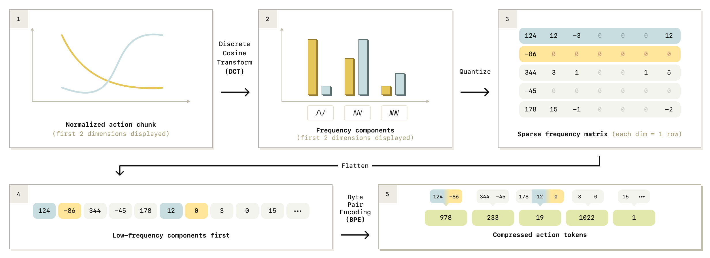
3.2 FAST 的算法与压缩收益
FAST 首先用训练集第 1 与第 99 百分位把各动作维度映射到统一范围，以减弱跨机器人尺度差异和异常值；然后对每维动作序列应用 DCT，把时间域平滑性变成频域稀疏性；系数经缩放、取整、按低频优先展平，最后使用 BPE 学习常见系数组合。论文在一秒动作块上报告：BridgeV2 从 35 降至 20 token，DROID 从 105 降至 29，20 Hz 桌面收拾从 140 降至 28，50 Hz 双臂折衣从 700 降至 53，压缩收益随控制频率显著增加。
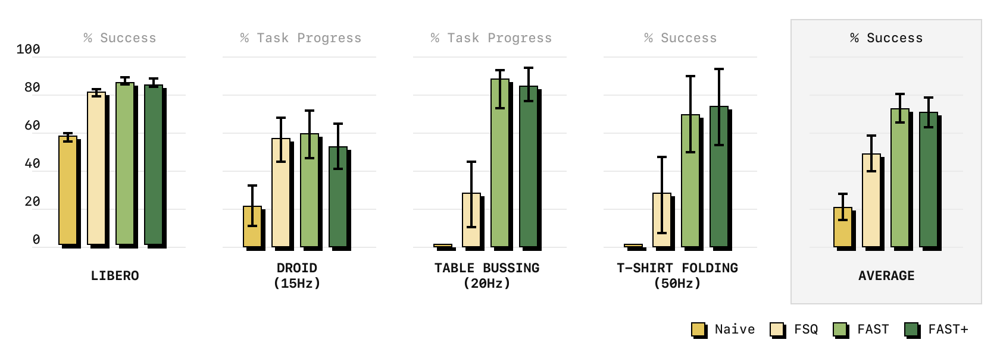
3.3 FAST 在 π 系列中的角色
π0 用 flow matching 保证连续控制质量，FAST 则让动作也能通过 next-token prediction 监督 VLM。后续 Knowledge Insulation 和 π0.7 同时使用两条动作路径：VLM 通过 FAST token 接收稳定的离散监督，action expert 通过 flow matching 输出真正执行的连续动作。这个“双重动作表述”是系列中容易被忽略的关键：FAST 不一定取代 action expert，而是给共享语义骨干提供与机器人行为对齐的学习信号；连续专家则保留高频、多峰执行能力。
4. π0.5：从多任务控制走向开放世界泛化
4.1 研究问题：新家、新物体、新指令为何比新任务名称更难
π0.5 把评价重点从“是否能完成预训练或后训练任务”转向“是否能在未见家庭中，根据语义完成长时程整理”。这类任务的难点不只在控制：模型必须识别稀有物体，理解“放到合理位置”这类隐式目标，把长指令拆成子任务，并在移动底盘、双臂、升降机构和多摄像头之间闭环协调。传统行为克隆容易记住训练厨房的物体—位置关联；单纯 VLM 又缺少可执行动作。π0.5 的答案是把多机器人动作、网页视觉语言数据、对象定位和高层子任务预测放在同一训练配方中，让语义推断直接成为控制策略的中间监督。

4.2 训练链路：低层动作与高层语义共同学习
π0.5 延续 π0 的 VLM + action expert，但训练样本不仅预测连续动作，还预测离散 FAST 动作 token、对象框与下一条高层子任务命令。高层策略从当前场景和总体目标生成诸如“打开抽屉”“把碗放入水槽”的语义步骤，低层策略再把该步骤转成动作块。训练混合 7 类机器人数据与多模态网页数据，后训练阶段聚焦移动双臂平台。关键并非简单加一个 planner，而是用中间语义标签把 VLM 的视觉语言能力与长任务控制对齐，使模型在未见环境中可以依据物体用途和场景语义重组熟悉技能。
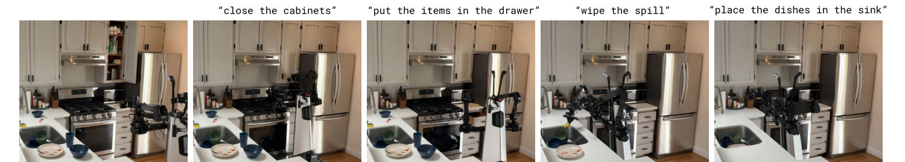
4.3 实验结论：泛化来自数据多样性与高层标注的共同作用
论文在训练住宅、未见真实住宅与模拟布置中评价抽屉、洗衣篮、水槽等任务，使用任务进度而非只看最终成功。消融表明，移除高层语义数据会显著损害长任务执行；减少低层机器人数据或模型规模也会下降。环境数量扩展实验进一步显示，增加训练环境可改善未见环境表现。π0.5 的贡献因此不是“零样本成功率更高”这一单点，而是给出一条可操作的数据配方：网页语义数据提供概念，多机器人数据提供动作先验，目标平台后训练提供执行接口，高层子任务标签把三者连成闭环。

4.4 局限：泛化仍可能是大规模技能重组
π0.5 的开放世界能力依赖训练数据中已经存在足够丰富的对象、动作与语义组合。论文证明模型能在未见住宅中重组这些能力，却难以严格区分“真正新概念推理”与“相似经验检索”。长任务还会受到高层子任务错误、低层执行失败和状态估计漂移的共同影响。它仍主要从高质量示范学习，失败 rollout 没有被系统利用；这直接构成 π*0.6 的研究起点。
5. 支撑分支：知识保留、实时动作块、记忆与推理
5.1 Knowledge Insulation：为什么动作训练会伤害 VLM
把 VLM 直接用于动作监督会出现梯度冲突：连续动作损失高噪声、任务分布窄，可能破坏预训练语义表示，导致语言遵循与视觉泛化退化。Knowledge Insulation 的设计是让 VLM 通过 FAST token 的离散交叉熵学习机器人行为，同时让 flow-matching action expert 读取 VLM 激活但停止动作专家梯度回流。这样，骨干接受稳定的离散监督，连续控制误差被隔离在动作专家中。该方法不是冻结 VLM；它仍会更新，只是更新信号经过更可控的“知识接口”。
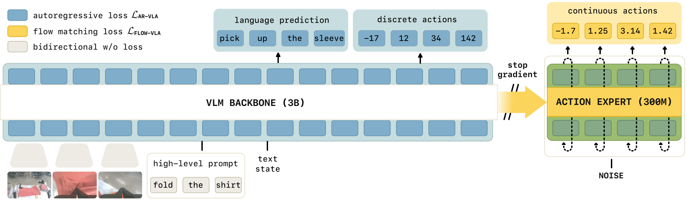
5.2 RTC：动作块降低推理成本，也制造响应延迟
action chunking 一次预测多个未来动作，能获得平滑控制并降低推理频率，但如果完全执行旧动作块，策略会对新观察响应过慢；如果每次新推断立即替换，又会在动作块边界产生不连续。Real-Time Chunking 在新旧动作块之间按时间位置逐渐过渡：已接近执行的动作更依赖旧块，未来动作更多采用新块。其目标是在不牺牲动作块结构的前提下，对扰动和推理延迟保持响应。论文报告在动态任务中相对基线提高约 25% 成功率，并把有效推理速度提升约 2 倍。
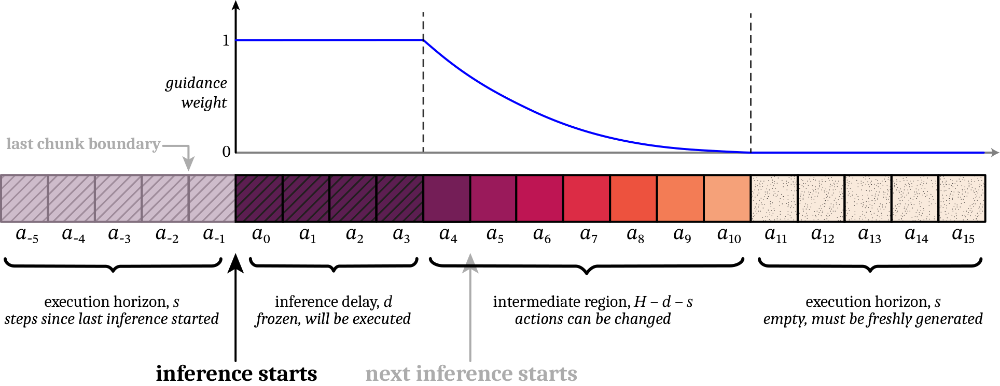
5.3 MEM 与 Think Harder：把历史和慢推理放到控制回路外层
长任务需要知道“之前做过什么”，而短观察窗口容易重复操作或忘记目标状态。MEM 使用时间与空间压缩的视频历史编码器，把可变长度历史变成固定数量 token；π0.7 继承该设计，论文在需要记忆的任务上比较无记忆与有记忆模型。Think Harder 则把较慢的 VLM 推理作为高层策略：当机器人遇到新情况或执行偏差时，高层生成新的语义指令，低层 VLA 保持实时控制。两者共同体现系列的分层思想：不要求 50 Hz 动作专家承担所有长期认知，而是把历史摘要和推理结果作为可更新上下文输入。
5.4 Hi Robot：语言交互不是界面，而是策略接口
Hi Robot 将高层 VLM 与低层 π0.5 组合，高层根据视觉、任务和用户对话产生子任务，低层执行。它展示了用户可在执行中纠正、改目标或指定偏好，使语言从一次性任务标签变成闭环控制信号。这条分支后来在 π0.7 中被进一步内化：subtask instruction 可以来自学习到的高层策略，也可以由人实时 coaching；模型在训练时随机丢弃部分上下文，使同一低层策略能在自动、人工指导或无指导模式间切换。
6. π*0.6：利用成功、失败与人工纠正学习
6.1 从示范学习到经验学习：失败不再只是应该删除的数据
行为克隆只告诉模型“专家做了什么”，很难利用机器人自主执行中的失败片段；过滤掉失败会浪费大量真实交互，直接模仿失败又会复制错误。RECAP（Experience and Corrections via Advantage-conditioned Policies）把示范、历史策略 rollout、自主执行与人工干预统一为带价值判断的训练数据。它先训练价值函数估计距离成功还剩多少步，再计算动作相对当前策略的 advantage，最后把 advantage 的正负作为额外条件送给 VLA。推理时要求模型生成“positive advantage”行为，从而利用全部数据而不必对低价值动作赋高模仿权重。

6.2 关键公式：价值、advantage 与正则化策略改进
对轨迹 τ=(o₀,a₀,...,o_T)，目标是最大化回报 J(π)=E_τ[Σ_t r_t]。价值函数 V^π(o_t) 估计从当前状态继续执行的预期回报，n-step advantage 可写为：
RECAP 使用稀疏终局奖励：成功终点奖励为 0，失败终点给一个大负值，其余步骤为负的步成本，因此价值可解释为“归一化后的剩余成功步数”。与 PPO 直接优化策略概率不同，RECAP 将 A>0 二值化为文本/条件输入，并在全量离线数据上做条件监督学习。这个选择尤其适配 flow matching，因为后者没有易用的闭式动作似然；同时策略仍被数据分布隐式正则化，不容易在有限真实机器人数据上发生激进更新。
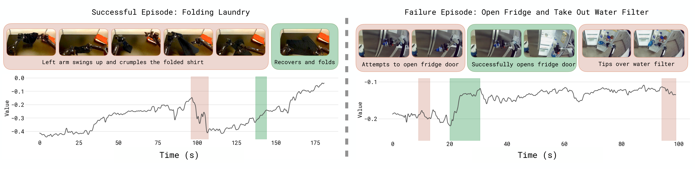
6.3 实验结论：可靠性提升主要来自困难任务与速度
RECAP 在简单/多样衣物折叠、意式咖啡与纸箱组装上比较基础 π0.6、RL 预训练、offline RL + SFT 与最终真实经验训练。论文同时报告成功率和 throughput（每小时成功次数），因为只提高成功率但动作极慢并不实用。最终 π*0.6 在除多样衣物外的任务中达到 90% 以上成功率；在多样衣物与咖啡任务中，每小时成功次数超过翻倍，失败率约减半。简单衣物的 SFT 成功率已经接近上限，但 RECAP 仍提高 throughput，说明经验学习既能修复失败，也能压缩无效动作。
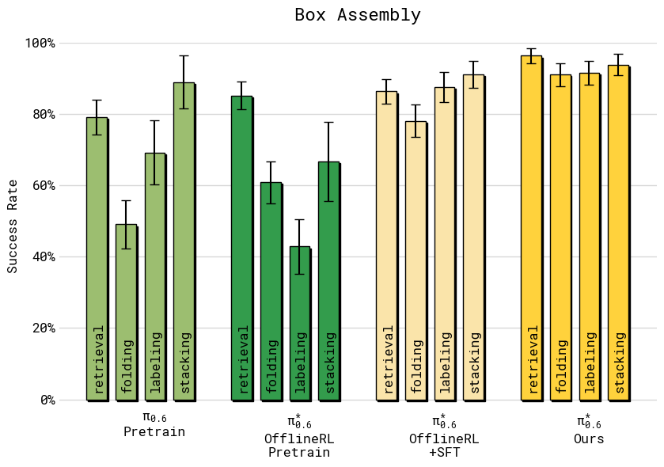
6.4 局限：RECAP 改善目标任务，不自动产生无限开放世界能力
RECAP 仍需要任务级成功标签、真实 rollout 与人工纠正；对奖励难定义、失败成本高或无法安全探索的任务，经验收集仍昂贵。价值函数可能在分布外状态误判，二值 advantage 也会把“略好”和“非常好”视作同一条件。π*0.6 的高可靠性主要来自对目标任务持续收集经验，而不是一次预训练后对所有新任务零样本可靠。π0.7 随后尝试把“经验的质量、策略和目标状态”直接编码进 prompt，使更多异质经验可在预训练阶段共同利用。
7. π0.7：把策略质量、子目标、历史与用户指导统一为上下文
7.1 核心转变：通才策略不仅要会做，还要能被精确引导
π0.7 的研究目标是 steerable generalist：一个模型既能直接执行多种灵巧任务，又能通过详细语言、质量元数据、子目标图像和用户 coaching 改变行为。它不再把次优和失败数据视作必须过滤的污染，而是给每条 episode 配上足够详细的上下文，告诉模型该轨迹的任务、速度、质量、错误与策略特征。训练目标仍是给定历史观察与上下文 C_t 最大化动作块条件似然的近似下界：
关键变量变成 C_t：同一观察可以对应不同质量、速度、控制模式和子目标；推理时选择上下文，就等于从一个多策略模型中“调出”期望行为。这是 π*0.6 advantage conditioning 的推广，也是语言交互、世界模型与记忆真正进入低层 VLA 的接口。
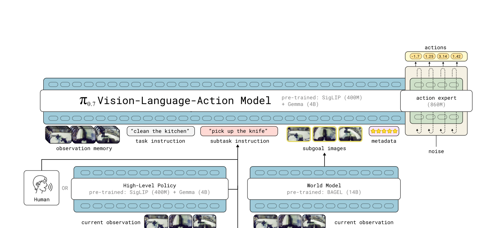
7.2 Prompt 组成：语言、metadata 与 subgoal image 分别解决什么
π0.7 的 prompt 包含总体指令、当前语义子任务、episode metadata、控制模式和 subgoal image。子任务文字提供可解释的阶段目标，适合人或高层策略修改；metadata 描述速度、质量、错误和数据来源，使失败和次优轨迹在正确条件下可被学习；subgoal image 则具体表达“成功推进后的场景应该长什么样”，补充语言难以精确描述的空间布局。训练时随机丢弃各组件，使模型能接受任意子集；推理时子任务变化或约四秒后异步刷新子目标图像，低层动作推断持续使用最新上下文。
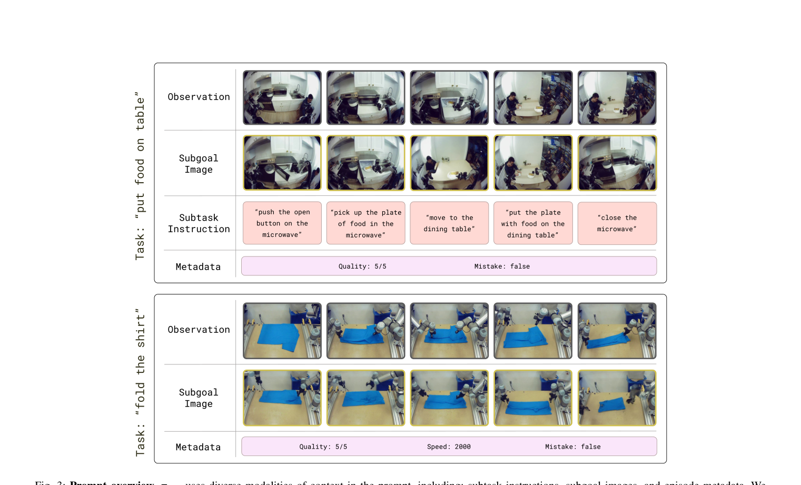
7.3 推理闭环：高层语义、轻量世界模型、RTC 与 CFG
运行时，高层语义策略生成或更新子任务，基于 BAGEL 的轻量图像生成模型产生 subgoal image，VLA 在历史观察与上下文下生成 50 步动作块；系统执行其中 15 或 25 步，并用 RTC 与下一动作块平滑衔接。子任务与图像生成在独立线程异步运行，不阻塞低层控制。由于训练时做了 prompt dropout，推理还能对 metadata 使用 classifier-free guidance：将条件与无条件动作方向做加权差分，以更强地偏向高质量或高速行为。这里的 CFG 不是图像美化，而是策略行为强度的调节器。
7.4 实验一：分布内灵巧任务与记忆任务
π0.7 在切蔬菜、剥果蔬、折叠衣物、桌面布置等多种任务上直接执行，并与 π*0.6 及专门策略比较。论文指出分布内任务常超过 90% 成功率；对需要历史的长任务，MEM 风格视频历史能显著改善表现。需要注意，π0.7 的“out-of-the-box”指不对每个评价任务单独后训练，并不意味着训练数据中从未出现相关技能。结果最有力地证明一个统一模型可吸收多个 specialist 的执行质量，同时保留语义可操控性。
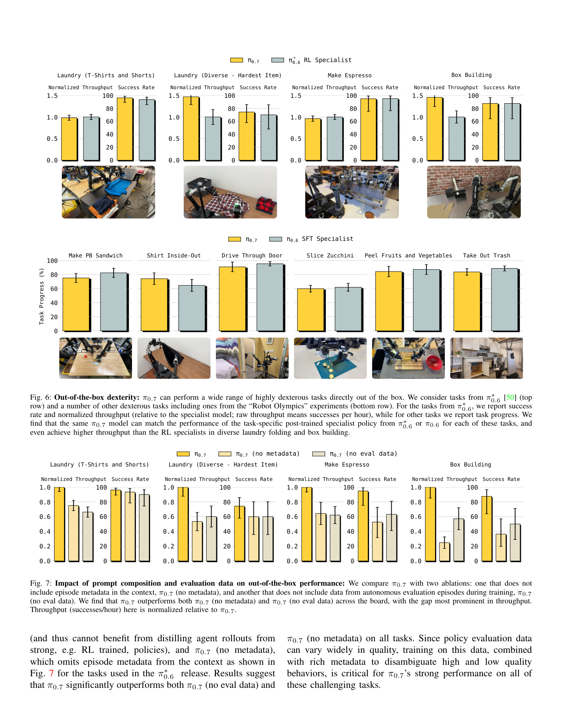
7.5 实验二：语言遵循、打破数据偏置与跨具身重组
π0.7 在未见厨房与卧室中执行由 3–6 条开放式指令组成的序列，还处理“拿起用来喝汤的物品”这类指称性语言。更重要的是，它能遵循与训练偏置冲突的指令，例如改变物体默认摆放方式；这说明策略并非只记住动作共现。跨具身实验中，模型把在一种机器人上学到的技能迁移到另一平台，并产生更适合目标机器人几何的策略，例如改变抓取方向或利用桌面辅助折叠。论文同时承认，跨具身结论更适合解释为技能重组，而不是动作接口完全通用。
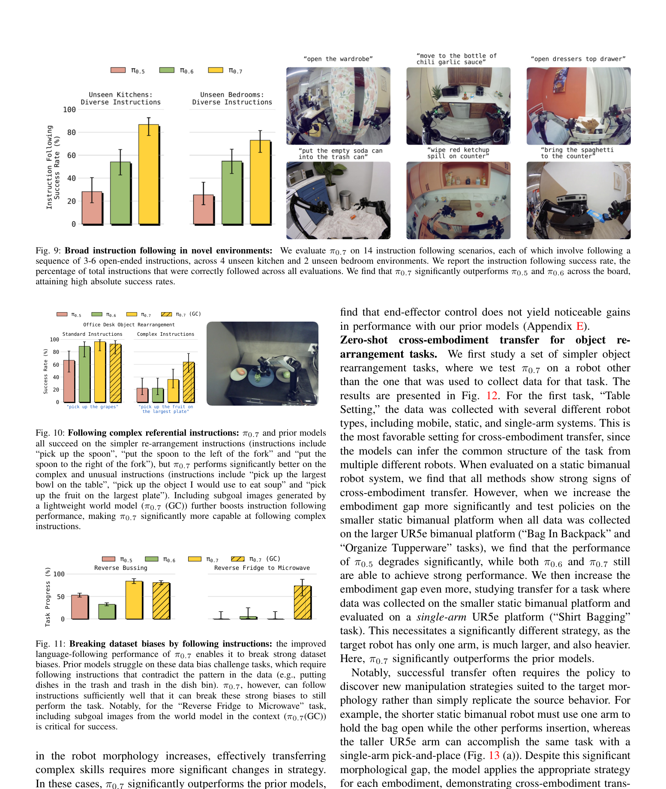
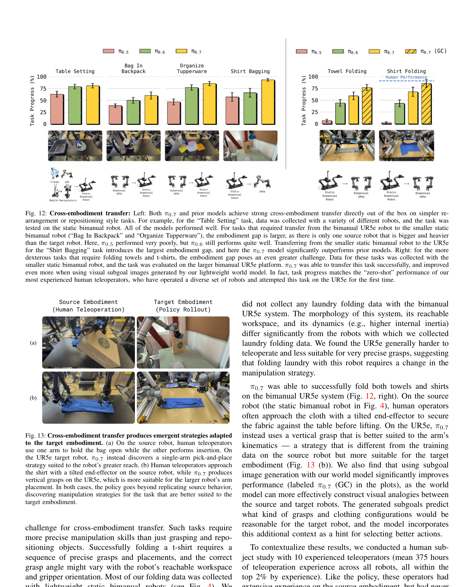
7.6 实验三：用户 coaching 如何变成新能力
π0.7 的 steerability 允许用户逐步给出子任务指令，先完成模型不能自主规划的新长任务，再把这些 coaching 轨迹加入数据，训练成自主能力。论文报告在相关实验中，人工 coaching 可达到约 85.6% 任务进度和 80% 成功率，π0.7 自主版本达到约 85.6% 任务进度与 80% 成功率，显示指导轨迹可以被吸收到模型中。这里的创新不是语音遥控，而是把语言指导变成低成本数据采集与策略改进接口：人描述语义步骤，不必逐关节遥操作。
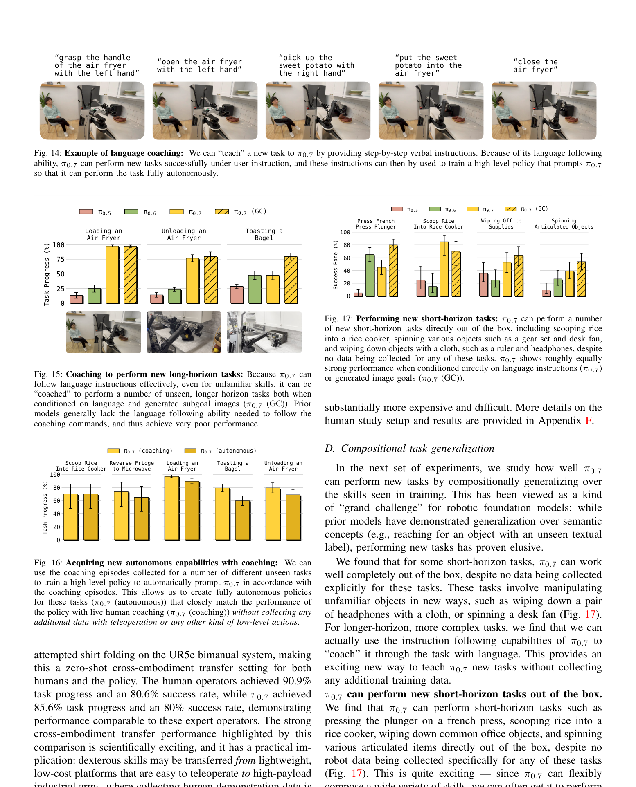
7.7 π0.7 的局限：可操控并不等于可靠通用
论文明确指出，分布内任务成功率常超过 90%，未见任务或未见任务—机器人组合通常落在 60–80%，离真正可部署通用机器人仍有距离。数据规模巨大后，“seen/unseen”也难严格界定：某个评价任务可能没有同名数据，却包含在其他任务中的相似技能。subgoal image 生成存在延迟和可达性问题，metadata 的定义与标注可能引入人为偏置，prompt 组合越复杂，系统集成和故障定位越困难。因此 π0.7 最可靠的结论是“多样上下文能把异质经验组织成可操控策略”，而不是“机器人已能自主解决任意新任务”。
8. 整体变迁：π 系列的方法论演进
8.1 架构演进：从双专家，到多层异步控制系统
π0 的基本单元是双专家：VLM 负责视觉语言上下文，action expert 负责连续动作。π0.5 在其上增加显式高层子任务预测，使长时程语义规划进入训练目标。Knowledge Insulation 把离散动作监督和连续动作监督拆分，保护 VLM；MEM 扩大历史窗口；RTC 解决动作块执行与新观察之间的时间矛盾。π*0.6 增加价值函数和 advantage 条件，让策略从经验中改进。π0.7 最终形成多线程系统：高层语义策略、世界模型、历史编码器、VLM、action expert 与实时动作块各自承担不同时间尺度的职责。
8.2 数据演进：从“更多示范”到“给异质经验加语义”
π0 主要依赖跨机器人高质量示范，目标是建立广泛动作先验；π0.5 加入网页多模态数据、高层子任务和更多环境，强调语义泛化；π*0.6 开始系统利用自主 rollout、失败与人工干预，通过价值和 advantage 判断数据质量；π0.7 则把质量、速度、错误、策略、子目标等信息直接放入 context，使同一个模型能解释互相矛盾的数据。方法论由“过滤出最好的数据供模仿”变成“保留更多数据，并明确告诉模型这段经验意味着什么”。
8.3 动作表示演进：连续与离散不是二选一
系列同时保留 flow matching 与 FAST，反映两个目标：执行端需要连续、平滑、多模态的动作分布；共享 VLM 需要稳定、高信息密度的离散监督。π0 证明 flow matching action chunk 可用于高频控制；FAST 证明频域压缩让自回归动作 token 在高频数据上可训练；KI 将两者组合为“离散监督骨干、连续专家执行”。这比争论“VLA 应该生成 token 还是连续值”更有启发：不同表示可服务不同模块和损失，只要接口与梯度路径被精心设计。
8.4 训练范式演进：从行为克隆到条件化策略改进
π0/π0.5 的主训练范式仍是条件行为克隆；RECAP 不直接对 flow policy 做策略梯度，而是训练价值函数、计算 advantage，并把“更优行为”作为条件监督学习。这种做法把强化学习转成 VLA 擅长的条件建模问题。π0.7 再把 advantage 的思想扩展为多维 context：质量、速度、错误、子任务和子目标图像都可以指定希望模型生成哪一类行为。换言之，策略改进逐渐从更新一组不可解释权重，变成学习一个可由上下文选择的行为族。
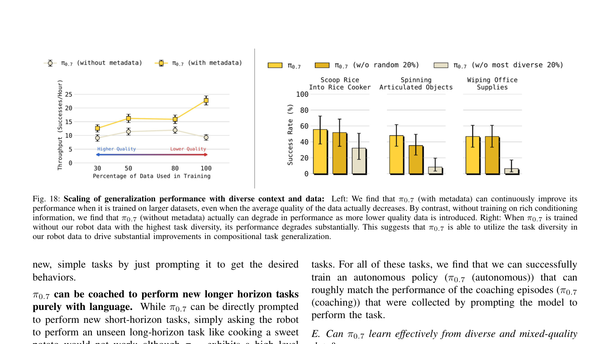
8.5 一条贯穿全系列的系统原则：把不同时间尺度解耦
动作专家负责几十毫秒到数秒的连续控制；RTC 管理相邻动作块；高层子任务覆盖数秒到数十秒；MEM 压缩分钟级历史；世界模型提供视觉目标；价值函数从整条 episode 判断成功方向；用户 coaching 在更稀疏的关键节点介入。π 系列不断把原本压在单个端到端策略上的职责拆到不同时间尺度，再通过 context 汇合。其优势是每个模块更适合自己的监督与计算预算；代价是系统复杂度增加，错误可能来自高层目标、视觉生成、价值误判、动作控制或异步延迟，部署时必须逐层诊断。
9. 复现路线、局限与组会问答
9.1 最小可行复现：不要一开始复制完整 π0.7
合理的复现顺序应按接口逐步验收。第一阶段在单机器人数据上复现 π0 风格 action expert：验证 flow matching 能从多视角、指令和状态生成可执行动作块，并报告动作重建、闭环成功率和动作块长度敏感性。第二阶段加入 FAST，比较朴素分箱与 DCT+BPE 在 5/20/50 Hz 数据上的 token 数、收敛速度与执行结果。第三阶段加入 KI，单独检查语言遵循和视觉泛化是否在动作训练后保留。第四阶段再收集成功/失败 rollout，训练价值函数与 advantage-conditioned policy。只有这些接口都通过，才值得加入历史编码、子目标图像、coaching 与异步推理。
9.2 复现风险清单
| 风险 | 关键依赖 | 可验收指标 |
|---|---|---|
| 跨机器人数据标准化 | 相机、关节、末端动作、频率与语言标注统一 | 每个 embodiment 独立闭环成功，混合训练不退化 |
| Flow action expert | 动作归一化、噪声路径、去噪步数、chunk 执行长度 | 离线动作误差与真实成功率同时改善 |
| FAST tokenizer | DCT 系数缩放、量化与 BPE 词表 | 相同重建误差下 token 数下降，高频任务收敛更快 |
| 价值与 advantage | 成功标签、任务长度归一化、失败代价 | 价值排序与人工判断一致，条件策略优于 SFT |
| π0.7 上下文 | metadata、子任务、subgoal image 与 dropout | 单组件消融可解释，错误上下文不会导致危险动作 |
| 异步部署 | 高层策略、世界模型、VLA 与 RTC 的时序 | 延迟注入后吞吐量与成功率保持稳定 |
9.3 系列最重要的未解问题
第一，规模化之后如何严谨定义“未见”？当数据中包含大量无标签或偶然技能时，任务名去重不足以证明真正外推。第二，prompt 与 metadata 的可操控性如何做安全约束？若用户给出冲突、危险或不可达子目标，低层策略是否能拒绝。第三，世界模型提供的 subgoal image 是语义目标还是物理可达状态，如何验证。第四，RECAP 的成功标签与价值函数如何扩展到多目标、连续质量和安全成本。第五，模块化系统出现失败时，如何将责任归因到感知、记忆、高层规划、价值估计或动作执行。
9.4 组会问答准备
Q1：π 系列最核心的架构创新是什么？
不是单个模型尺寸，而是把预训练 VLM 与专门 action expert 连接：VLM 保留视觉语言语义，action expert 用 flow matching 生成高频连续动作；后续所有版本都在这一接口上扩展。
Q2：FAST 是否取代了 flow matching？
没有。FAST 让动作成为高信息密度离散 token，适合监督 VLM；flow matching action expert 仍负责真正执行的连续动作。KI 明确把两者放入同一模型并隔离梯度。
Q3：π0.5 与 π0 的本质差异是什么？
π0 主要证明跨机器人连续控制底座和后训练能力；π0.5 把高层语义子任务、多模态共训练与未见家庭评价作为核心，目标从技能覆盖转向开放世界技能重组。
Q4：RECAP 为什么不用标准 PPO？
flow matching 策略没有方便、稳定的闭式动作 log-probability；真实机器人数据又稀缺且离线。RECAP 用价值函数生成 advantage 条件，再以监督学习训练全量数据，更接近 VLA 的可扩展训练方式。
Q5：π0.7 的 steerability 来自哪里？
来自训练时把任务、子任务、质量、速度、错误、控制模式、历史和子目标图像共同作为 context，并随机丢弃组件；推理时人或高层模型通过修改 context 选择行为。
Q6：π0.7 是否已经是通用家务机器人？
不是。论文报告分布内任务常超过 90%，未见任务或任务—机器人组合多在 60–80%，且“未见”难严格界定。它证明了可操控通才模型的有效配方，而非完成了开放世界可靠部署。